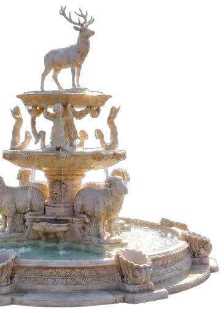
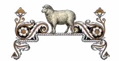
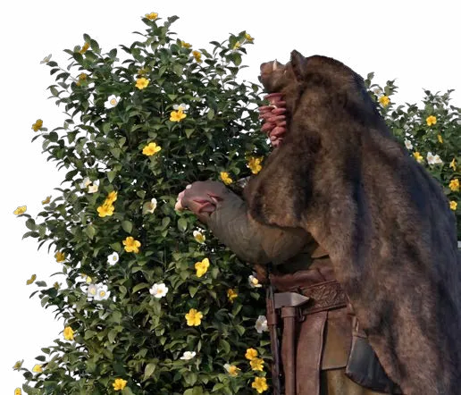
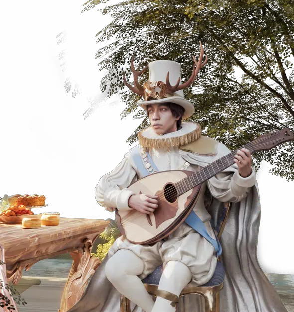
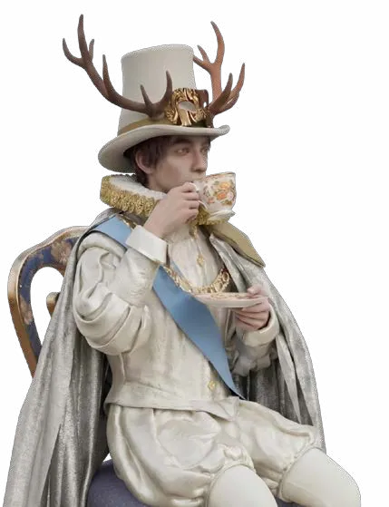
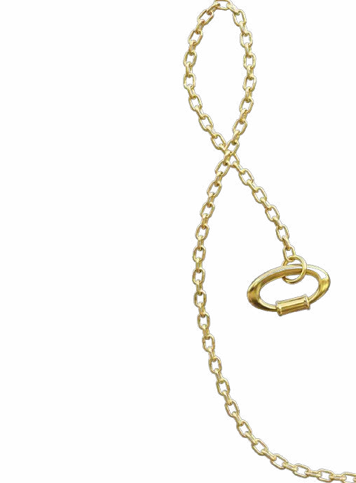
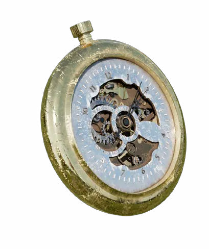
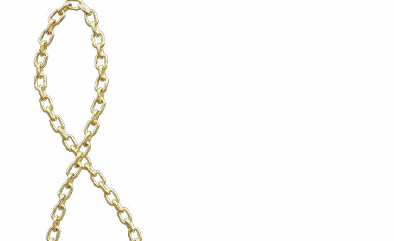

Khu Vườn Thường Xanh
Hàng ngàn cánh hoa vàng óng đang lững lờ rơi xuống như mưa. Chúng xoay tròn trong không trung, phản chiếu ánh nắng thành vô số đốm sáng li ti. Gió rất nhẹ. Nhẹ đến mức mỗi cánh hoa đều đáp xuống mặt đất như thể không hề mang theo trọng lượng. Brann khẽ chớp mắt. Cậu vẫn chưa quen với thứ ánh sáng rực rỡ ấy. Suốt cả cuộc đời, đôi mắt của một người lùn chỉ biết đến màu cam đỏ của lò rèn và những hành lang đá ẩm thấp dưới lòng đất. Ánh sáng nơi ấy luôn đến từ lửa, chưa bao giờ đến từ mặt trời. Cậu đưa bàn tay lên che mắt. Lớp nấm trắng bám trên mu bàn tay dưới ánh nắng trông càng rõ hơn. Brann lập tức kéo ống tay áo xuống. Một phản xạ đã trở thành thói quen. Cậu không muốn ai nhìn thấy chúng. Ngay cả trong một thế giới xa lạ.
Trước mắt Brann bây giờ là một con đường lát đá trắng uốn lượn giữa khu vườn rộng đến vô tận. Những bụi hồng leo phủ kín các vòm cổng bằng đá cẩm thạch. Những hàng cây được cắt tỉa thành hình xoắn ốc hoàn hảo. Đài phun nước bằng ngọc trắng ngân nga tiếng nước trong veo. Ánh nắng len qua từng tầng lá, nhuộm cả không gian bằng màu mật ong ấm áp. Và rồi ở đâu đó rất xa, một giai điệu mandolin khẽ cất lên. Những nốt nhạc trong trẻo len qua kẽ lá, theo gió bay đến rồi tan đi, như đang vô tình dẫn lối cho một vị khách lạc đường. Brann dừng chân. Đã rất lâu rồi cậu không nghe thấy âm nhạc. Ở xưởng rèn dưới lòng đất, thứ duy nhất vang lên mỗi ngày chỉ là tiếng búa nện lên đe, tiếng kim loại đỏ rực gặp nước lạnh và tiếng than cháy tí tách suốt đêm dài. Âm nhạc… Là thứ thuộc về một thế giới khác. Cậu tiếp tục bước. Tiếng đàn ngày một rõ hơn. Rồi xen giữa những giai điệu ấy là tiếng cười. Không phải tiếng cười ồn ào. Mà là những tràng cười giòn giã, chân thật, khiến người ta bất giác muốn mỉm cười theo. Bỗng một cơn gió nhẹ lướt qua, mang theo hương bơ, hương táo nướng, một chút quế, một chút mật ong… Brann vô thức hít thật sâu. Mùi hương ấy khiến bụng cậu khẽ cồn cào. Nhưng lạ hơn cả… Là cảm giác ấm áp len lỏi trong lồng ngực.

Con đường khẽ uốn mình qua một hàng cây phong cổ thụ. Ánh nắng bắt đầu xuất hiện nhiều hơn. Những chiếc lá vàng lặng lẽ rơi xuống mặt đất, phủ kín lối đi như một tấm thảm mềm. Brann khẽ bước chậm lại. Tiếng rót trà. Tiếng sứ chạm vào nhau. Tiếng chim ríu rít chuyền cành. Tất cả hòa vào tiếng đàn, tạo thành một bản nhạc mà cậu chưa từng nghe trong suốt cuộc đời mình.
Brann dừng lại sau một thân phong lớn. Từ khoảng cách ấy, cậu nhìn thấy khu vườn. Một khoảng sân ngập nắng. Ở giữa là chiếc bàn trà phủ khăn trắng, dưới bóng một cây sồi già. Đứng dưới vòm hoa là một người đàn ông cao lớn với cặp sừng hươu trắng muốt vươn lên như những nhánh cây mùa xuân. Ông mặc bộ lễ phục quý tộc màu ngà, được thêu chỉ vàng bằng những hoa văn tinh xảo. Chiếc áo choàng dài phủ xuống tận gót chân, khẽ lay động theo làn gió. Trên tay ông là một cây mandolin cổ bằng gỗ óc chó, mặt đàn khảm xà cừ lấp lánh. Ông vừa gảy đàn vừa kể chuyện, thỉnh thoảng lại cười lớn đến mức mấy chú sẻ trên cành cây giật mình bay lên, rồi chẳng bao lâu sau lại đậu xuống vai ông như thể đã quá quen với sự ồn ào ấy. Đối diện ông là một thiếu nữ trong chiếc váy xanh nhạt. Trên mái tóc bạch kim là chiếc vương miện nhỏ đan bằng cành nguyệt quế. Hai chiếc sừng cừu uốn cong ôm lấy mái đầu như một tác phẩm điêu khắc. Nàng nghiêng bình trà bằng sứ trắng, dòng trà óng ánh chảy xuống chiếc tách nhỏ như mật. Thỉnh thoảng nàng ngước lên nhìn người đàn ông, bật cười, rồi lắc đầu trước một câu chuyện ngớ ngẩn nào đó. Trên bàn là bánh táo vừa ra lò. Làn khói mỏng vẫn còn bốc lên. Mùi bơ và quế theo gió bay khắp khu vườn. Không có điều gì đặc biệt xảy ra. Không có phép màu. Không có những cuộc trò chuyện vĩ đại. Chỉ là một buổi trà chiều rất bình thường. Nhưng chính sự bình thường ấy… Lại khiến Brann không thể rời mắt. Cậu đứng lặng sau hàng cây. Không biết mình đã nhìn bao lâu. Một phút. Hay rất nhiều năm. Lần đầu tiên sau một quãng thời gian dài đến mức chính cậu cũng không còn nhớ nổi… Brann nhìn thấy những con người thật sự đang tận hưởng cuộc sống. Không phải tận hưởng vì họ có tất cả. Mà vì họ biết trân trọng những điều nhỏ bé đang ở trước mắt. Brann cúi đầu. Theo bản năng, cậu kéo thấp chiếc mũ da, giấu đi một phần khuôn mặt. Đôi tay đầy những mảng nấm trắng lặng lẽ giấu sau lưng.


"Mình không thuộc về nơi đó."
Ánh nắng ấy quá ấm. Tiếng cười ấy quá trong trẻo. Còn cậu… Chỉ là một người thợ rèn mang đầy mùi khói than và những vết nấm loang lổ trên da. Brann khẽ lùi lại. Chiếc lá khô dưới chân bất ngờ phát ra một tiếng rắc rất nhỏ. Không lớn, nhưng đủ để cô gái bên bàn trà dừng tay. Nàng không nhìn ngay về phía tiếng động. Chỉ nhẹ nhàng đặt ấm trà xuống. Đôi mắt lặng lẽ hướng về hàng cây nơi Brann đang đứng. Một cơn gió thổi qua. Những chiếc lá vàng xoay tròn giữa khoảng không. Nàng mỉm cười. Nụ cười ấy không hề mang vẻ ngạc nhiên, như thể sự xuất hiện của một vị khách xa lạ là điều hoàn toàn tự nhiên. Nàng khẽ quay sang người đàn ông bên cạnh.

"Alaric."
"Ừm?"
"Hình như…"
Nàng nghiêng đầu rất nhẹ.
"…chúng ta có khách."
Người đàn ông ngừng gảy đàn. Ông nhìn theo ánh mắt của nàng. Rồi bật cười hiền hậu. Không hề gọi lớn. Không hề bước tới. Ông chỉ nhìn chiếc ghế còn trống bên cạnh bàn trà. Chiếc ghế vẫn được kéo ra sẵn. Như thể vốn dành cho một ai đó. Alaric cầm lấy tách trà của mình, thong thả nhấp một ngụm.
"Ta cứ nghĩ…"
Ông mỉm cười.
"…chiếc ghế ấy sẽ phải chờ lâu hơn."
Alaric nhìn về phía hàng cây một lần nữa. Đôi mắt ông ánh lên sự vui vẻ như thể đã quen biết Brann từ rất lâu.
"Nếu còn chậm thêm một chút nữa…bánh và trà cũng sẽ nguội mất."
Cô gái nâng tách trà lên môi, vui vẻ tiếp lời.
Brann cứng người. Cậu không ngờ mình đã bị phát hiện. Bàn tay vô thức siết chặt chiếc quai túi da bên hông. Cậu cúi đầu nhìn đôi giày đầy bụi đất của mình, rồi lại ngẩng lên nhìn hai con người dưới tán cây. Chiếc ghế vẫn còn đó. Chiếc bàn vẫn còn đó. Và cả hai vẫn đang nhìn về phía cậu với nụ cười hiền hậu. Brann hít một hơi thật sâu. Rồi bước ra khỏi thân cây.
"…Xin… xin lỗi."
Giọng cậu nhỏ đến mức gần như tan vào trong gió.
"Tôi… tôi không cố ý nhìn trộm."
Cậu luống cuống cúi đầu.
"Không… ý tôi là…"
"Tôi không có ý…"
Brann bỗng khựng lại. Càng giải thích, cậu càng thấy mình nói sai.
"Tôi chỉ…"
"…đi ngang qua."
"Rồi…"
"…nghe thấy tiếng đàn."
"À không…"
"Là tôi…"
"…tôi ngửi thấy mùi bánh trước."
Cậu vội vàng lắc đầu.
"Không đúng…"
"…ý tôi là…"
"Tôi không định ăn bánh."
"Tôi…"
Brann thở hắt ra. Hai tai đỏ bừng. Cuối cùng cậu chỉ biết cúi gằm mặt.
"…Xin lỗi."
Một khoảng lặng ngắn trôi qua.
Rồi…
Alaric bật cười. Tiếng cười vang lên sảng khoái như nắng đầu hè. Astrid đưa tay che miệng, đôi vai khẽ rung lên.
"Ta đoán đúng rồi."
Alaric vừa cười vừa nói.
"Anh ấy đến vì bánh."
Astrid nghiêng đầu.
"Không."
Nàng khẽ lắc đầu.
"Rõ ràng là vì tiếng đàn."
Brann vội vàng xua tay.
"Không… không phải…"
Alaric chống cằm, làm ra vẻ trầm ngâm.
"Hay là vì trà?"
Brann lúng túng đến mức suýt đánh rơi chiếc túi da.
"Tôi…"
"…thật sự chỉ đi ngang qua thôi."
Hai người nhìn nhau, rồi lại cùng phá lên cười. Đó không phải tiếng cười chế giễu, mà là tiếng cười trong trẻo đến mức khiến Brann bối rối. Giống như hai người bạn vừa trêu một vị khách quá đỗi thật thà. Astrid đứng dậy. Nàng bước đến gần Brann. Không quá gần. Chỉ vừa đủ để cậu không cảm thấy bị ép buộc.
Nàng mỉm cười.
"Vậy thì…"
"…nếu đã đi ngang qua rồi."
"Anh có muốn đi ngang thêm vài bước nữa không?"
Nàng đưa tay về phía chiếc ghế còn trống.
"Trà vẫn còn nóng."
"Và bánh…"
Astrid khẽ liếc Alaric.
"…hình như cũng đang rất muốn được ăn."
Alaric lập tức gật đầu đầy nghiêm túc.
"Ta e rằng nếu ngài còn từ chối thêm vài phút nữa…"
"…thì ta sẽ phải ăn hết phần của ngài mất."
Brann đứng lúng túng giữa lối đi. Đầu vẫn cúi thấp. Hai tay nắm chặt quai chiếc túi da đến trắng bệch. Không khí bỗng trở nên yên lặng. Cậu bắt đầu lo mình vừa phá hỏng một buổi chiều đẹp. Đúng lúc ấy, Alaric bỗng nhìn xuống chiếc bánh táo trên bàn. Ông thở dài đầy tiếc nuối.
"Xem ra…chiếc bánh này hết hy vọng rồi."
Brann giật mình.
"…Hả?"
Alaric nghiêm túc chỉ vào đĩa bánh.
"Nó vừa mới ra lò."
"Đang còn nóng."
"Nếu không có ai ăn cùng…nó sẽ rất buồn."
Astrid khẽ bật cười.
"Alaric."
"Anh lại bắt đầu nói chuyện với bánh nữa rồi."
"Anh ấy sẽ tưởng chúng ta kỳ quặc mất."
"Không đâu."
Alaric chống cằm.
"Chiếc bánh thật sự rất buồn."
"Em nhìn xem."
"Vỏ bánh cũng xị xuống rồi."
Astrid giả vờ quan sát.
"Ừm…"
"Hình như đúng là thế."
Brann chớp chớp mắt. Không biết họ đang đùa. Hay nói thật. Một lúc sau. Khóe môi cậu khẽ động. Rất nhẹ. Alaric lập tức chỉ vào cậu.
"Thấy chưa?"
"Bánh vừa vui lên đấy."
Astrid bật cười thành tiếng. Lần này, Brann cũng không nhịn được. Cậu khẽ cười. Chỉ một tiếng rất nhỏ, nhưng đủ để chính cậu cũng bất ngờ. Đã lâu rồi cậu không cảm thấy vui vẻ như vậy. Không khí giữa ba người bỗng nhẹ đi rất nhiều. Astrid chậm rãi đứng dậy. Nàng bước đến gần. Không quá gần. Chỉ vừa đủ để Brann không phải lùi lại. Nàng đưa tay nâng nhẹ gấu váy.
"Có lẽ…chúng ta nên giới thiệu với nhau."
Nàng mỉm cười.
"Ta là Astrid."
"Đây là Alaric."
Alaric cúi đầu rất kiểu cách.
"Là người luôn bị mắng vì nói chuyện với bánh."
Astrid khẽ lắc đầu.
"Không chỉ bánh."
"Cả chim, sóc, hoa hồng…"
"…và đôi khi cả ấm trà."
"Ấm trà có nhiều điều thú vị để nói lắm."
Alaric đáp lại đầy nghiêm túc. Brann lại bật cười. Lần này, tiếng cười rõ hơn lúc trước.
Astrid nhìn cậu.
"Vậy còn anh?"
Brann hơi khựng lại.
"…Brann."
Cậu trả lời rất nhỏ.
"Một người thợ rèn."

Astrid nghiêng đầu.
"Chỉ thế thôi sao?"
Brann im lặng. Cậu định nói thêm. Rằng mình đến từ đâu. Rằng mình mang căn bệnh gì. Rằng mình chỉ là một kẻ thất bại. Nhưng rồi… Cậu dừng lại. Astrid dường như hiểu. Nàng không hỏi thêm. Chỉ mỉm cười.
"Được gặp anh là niềm vui của chúng ta, Brann."
Alaric kéo chiếc ghế còn trống ra. Âm thanh chân ghế khẽ lướt trên nền đá.
"Cả buổi chiều nay…chiếc ghế này cứ than phiền mãi. Nó bảo rằng đứng một mình buồn quá."
Astrid bật cười.
"Còn tách trà bên cạnh thì cứ sợ mình sẽ nguội."
Alaric nhún vai.
"Ta cũng chẳng biết làm sao."
"Đành chờ."
Ông nhìn Brann.
Ánh mắt vẫn đầy sự hóm hỉnh.
"May mà cuối cùng…người nó chờ cũng tới."
Brann nhìn chiếc ghế. Rồi nhìn hai người trước mặt. Lần đầu tiên, cậu không cảm thấy mình đang được mời vào một bữa tiệc. Mà giống như… Mình vừa trở về đúng chỗ ngồi vốn thuộc về mình. Brann bước tới một cách thận trọng. Cậu khẽ tháo đôi găng tay da đã sờn cũ, gấp chúng thật gọn rồi đặt lên mép bàn. Sau đó mới kéo chiếc ghế ra từng chút một, nhẹ đến mức gần như không phát ra tiếng động. Cậu nhìn chiếc ghế. Lại nhìn xuống thân hình thấp bé nhưng rắn chắc của mình. Đôi mày khẽ nhíu lại.
"Tôi…"
Brann ngập ngừng.
"Chiếc ghế này…"
"Có chắc là… chịu được tôi không?"
Alaric chớp mắt.
"Hửm?"
Brann lúng túng chỉ xuống ghế.
"Người lùn… thường nặng hơn vẻ ngoài."
"Cả đời tôi làm việc với sắt."
"Nên…"
"…tôi sợ sẽ làm gãy nó."
Nói rồi, cậu thử ngồi xuống. Nhưng chỉ dám đặt một phần trọng lượng cơ thể lên mặt ghế. Chiếc ghế khẽ phát ra một tiếng cọt kẹt rất nhỏ. Brann lập tức bật dậy.
"Tôi xin lỗi!"
Cậu vội vàng cúi xuống kiểm tra từng chân ghế, rồi còn lấy tay phủi phủi mặt ghế như thể vừa làm nó đau.
"Tôi thật sự không cố ý…"
Alaric và Astrid nhìn nhau. Hai người cố nén cười, nhưng chỉ được vài giây. Alaric là người bật cười trước. Ông chống tay lên trán.
"Ôi không…"
Astrid cũng khẽ che miệng.
"Có chuyện gì sao?"
Brann lo lắng hỏi. Alaric hít một hơi rất sâu, cố giữ vẻ nghiêm túc.
"Ta nghĩ…"
"…chiếc ghế vừa tự ái."
Brann khựng lại.
"…Tự ái?"
Alaric gật đầu đầy chắc chắn.
"Nó đã ở đây gần một trăm năm."
"Vậy mà hôm nay…"
"…lần đầu tiên có người nghi ngờ nó yếu đến thế."
Astrid nghiêng đầu nhìn chiếc ghế.
"Cũng tội thật. Nó vốn rất tự hào vì chưa từng làm ai ngã. Giờ chắc đang buồn lắm."
Brann ngơ ngác nhìn chiếc ghế. Rồi lại nhìn hai người. Mãi vài nhịp sau, cậu mới nhận ra. Họ đang đùa. Khóe môi Brann khẽ cong lên. Một nụ cười rất nhỏ. Alaric lập tức vỗ nhẹ lên lưng ghế.
"Nghe chưa?"
"Khách cười rồi."
"Tha lỗi cho ông ấy nhé."
Astrid kéo chiếc ghế lại gần bàn hơn một chút.
"Đừng lo."
Nàng mỉm cười.
"Nó khỏe hơn vẻ ngoài nhiều."
Rồi nàng nhìn Brann.
Ánh mắt dịu dàng.
"…giống như một người mà ta vừa quen."
Brann sững người. Cậu không đáp. Chỉ khẽ gật đầu. Lần này, cậu ngồi xuống. Không còn dè dặt như trước. Chiếc ghế vẫn phát ra một tiếng cọt kẹt rất nhỏ. Nhưng rồi… Nó đứng vững. Giống như chưa từng có điều gì đáng để lo lắng. Ngay lúc này, Alaric bắt đầu gảy những hợp âm đầu tiên trên cây đàn mandolin. Astrid ngả nhẹ người lên lưng ghế, khép hờ đôi mắt. Trên tay nàng là chiếc thìa bạc nhỏ, khẽ đưa qua đưa lại theo từng nhịp đàn như một nhạc trưởng đang chỉ huy dàn nhạc vô hình giữa tiếng chim và tiếng lá. Brann vẫn chưa dám đưa tay lên. Cậu ngồi rất thẳng lưng. Hai bàn tay đặt ngay ngắn trên đầu gối như một cậu học trò đang chờ bị gọi tên. Ánh mắt hết nhìn chiếc tách trà, lại nhìn đĩa bánh, rồi nhanh chóng cụp xuống. Cậu không biết mình nên làm gì trước. Alaric vẫn chăm chú gảy đàn. Như thể ông chẳng hề để ý đến sự căng thẳng của vị khách nhỏ bé. Đến khi bản nhạc kết thúc. Ông mới đặt cây đàn xuống.
"Brann."
Người thợ rèn khẽ giật mình.
"Dạ?"
"Nếm thử xem."
Alaric đưa mắt về phía tách trà trước mặt.
"Nếu để nguội thì Astrid sẽ buồn lắm."
Astrid mở mắt.
"Ta sẽ không buồn."
Nàng bình thản đáp.
"Nhưng trà thì có."
Brann chớp mắt.
"…Trà?"
Astrid khẽ gật đầu.
"Trà được pha để được thưởng thức."
"Nếu cứ để nó nguội đi…"
"…thì uổng lắm."
Brann cúi nhìn mặt nước trong veo phản chiếu khuôn mặt mình. Cậu chần chừ một lúc lâu, rồi mới nâng chiếc tách bằng cả hai tay, nhấp một ngụm rất nhỏ.
"Nó…"
"…ngon thật."
Alaric cười.
"Ta biết mà."
"Ít ai cưỡng lại được trà của Astrid."
Astrid đặt thêm một chiếc bánh táo lên đĩa của Brann.
"Thử cả cái này nữa."
Brann vội xua tay.
"Không… tôi…"
"Xin đừng khách sáo."
"Tôi…"
"Có thể…"
"…không xứng."
Câu nói vừa buột khỏi miệng. Chính Brann cũng khựng lại. Khu vườn bỗng im lặng. Alaric và Astrid nhìn nhau. Không ai hỏi vì sao. Không ai hỏi chuyện gì đã xảy ra. Alaric chỉ cầm chiếc bánh trên đĩa mình lên, cắn một miếng thật lớn, rồi vừa nhai vừa nói.
"May quá."
Brann ngẩng lên.
"Vì ta cũng chẳng xứng."
"…Hả?"
Alaric gật đầu đầy nghiêm túc.
"Ta từng làm cháy cả căn bếp."
Astrid bật cười.
"Ba lần."
"Bốn."
Alaric sửa lại.
"Lần thứ tư là do cái lò."
"Không phải do ta."
Astrid nhấp một ngụm trà.
"Chiếc lò hẳn cũng nghĩ vậy."
Brann ngơ ngác.
Rồi…
khóe môi cậu khẽ cong lên.
Alaric chống cằm.
"Ta cũng chẳng phải quý tộc hoàn hảo."
"Còn Astrid."
"Nàng từng tưới nhầm cả khu vườn bằng nước muối."
Astrid khẽ ho một tiếng.
"Đó là một sự cố."
"Một sự cố rất đáng nhớ."
Alaric cười.
"Đến giờ hoa oải hương vẫn chưa chịu tha thứ."
Lần này, Brann bật cười thành tiếng.
Một tiếng cười rất ngắn.
Nhưng đủ làm cả khu vườn dường như sáng hơn.
Astrid nhìn cậu.
"Thấy chưa."
Nàng mỉm cười.
"Không ai cần hoàn hảo mới được ngồi vào bàn trà."
Brann lặng người.
Cậu cúi xuống nhìn chiếc bánh trước mặt, rồi chậm rãi cầm lên. Miếng bánh đầu tiên giòn tan. Lớp táo bên trong vẫn còn nóng. Brann nhắm mắt. Đã bao lâu rồi, cậu mới ăn một thứ được làm chỉ để mang lại niềm vui. Không phải để no bụng. Không phải để tiếp tục làm việc. Chỉ đơn giản… Là vì nó ngon. Alaric rót thêm trà. Ánh nắng cuối chiều chậm rãi trượt qua mặt bàn. Ông nhìn những chiếc lá vàng đang rơi.
"Brann."
"Vâng?"
"Ngươi có biết…"
"…vì sao bọn ta luôn dành cả buổi chiều để uống trà không?"
Brann lắc đầu.
Alaric mỉm cười.
"Vì nếu cứ mải chạy theo ngày mai…thì sẽ chẳng bao giờ biết hôm nay đẹp đến thế nào."
Bữa tiệc trà cứ tiếp diễn như vậy suốt cả một buổi chiều, thỉnh thoảng lại bật cười vì những điều rất nhỏ nhặt. Brann không nói nhiều. Phần lớn thời gian chỉ lặng lẽ lắng nghe. Nhưng lần đầu tiên sau rất nhiều năm… Khóe môi cậu không còn nặng trĩu.



Khi mặt trời dần khuất sau những tán lá vàng, Astrid đứng dậy, bước vào căn nhà nhỏ phía sau khu vườn. Một lúc sau, nàng quay trở lại với một chiếc hộp gỗ sồi nhỏ, trên nắp được chạm khắc hình cành sồi và những chiếc lá vàng đang xoay trong gió. Nàng nhẹ nhàng đặt nó vào tay Brann.
"Đây là hộp nhạc đầu tiên ta tự làm. Nó không phải món đồ quý giá nhất. Nhưng là món đồ khiến ta mỉm cười mỗi khi mở ra."
Brann khẽ vuốt những đường chạm khắc trên nắp hộp.
"Tôi… không thể nhận."
"Có chứ."
Astrid mỉm cười.
"Niềm vui đẹp nhất là khi được mang theo trên những chuyến đi."
Brann cúi đầu rất lâu, rồi cậu chậm rãi mở chiếc túi da bên hông. Bên trong chỉ có vài dụng cụ cũ kỹ. Một chiếc kìm. Một viên đá mài. Và một chiếc đồng hồ bỏ túi bằng đồng đã ngả màu theo năm tháng. Cậu đặt chiếc đồng hồ lên bàn.
"Đây là kỷ vật duy nhất cha tôi để lại."
"Xin hãy giữ nó."
Alaric và Astrid đều sững lại.
Brann khẽ mỉm cười.
"Hôm nay…"
"…là lần đầu tiên sau rất nhiều năm…"
"…tôi quên mất thời gian."
"Nó nên ở lại nơi đã giúp tôi làm được điều đó."
Không ai nói gì.
Chỉ có tiếng kim đồng hồ vẫn đều đặn chuyển động.
Tích… tắc…
Tích… tắc…
Brann đứng dậy. Chiếc hộp nhạc được cậu ôm gọn trong tay. Alaric vẫn ngồi dưới gốc sồi, những ngón tay chậm rãi gảy lên cây mandolin. Astrid đứng trước hiên nhà, mỉm cười vẫy tay.
"Hy vọng một ngày nào đó…"
"…chúng ta lại được uống trà cùng nhau."
Brann khẽ cúi đầu.
"Lần sau…"
Cậu ngập ngừng.
"…tôi sẽ mang bánh của mình đến."
Alaric bật cười.
"Vậy bọn ta sẽ chuẩn bị thêm một chiếc ghế."
Brann cũng khẽ cười, rồi quay người bước đi. Con đường lát đá trắng lại phủ đầy những chiếc lá vàng. Phía sau lưng, tiếng đàn mandolin vẫn dịu dàng vang lên, hòa cùng tiếng chim và tiếng gió dưới tán Yggdrasil. Brann không ngoái đầu lại. Nhưng cậu biết… Ở nơi ấy vẫn luôn có một chiếc bàn trà. Và một chiếc ghế trống, đang lặng lẽ chờ đợi những vị khách lạc đường.
"Có những cuộc gặp gỡ không sinh ra để thay đổi số phận của một con người. Chúng chỉ lặng lẽ đặt vào trái tim người ấy một ngọn lửa nhỏ, đủ để soi sáng thêm một đoạn đường."